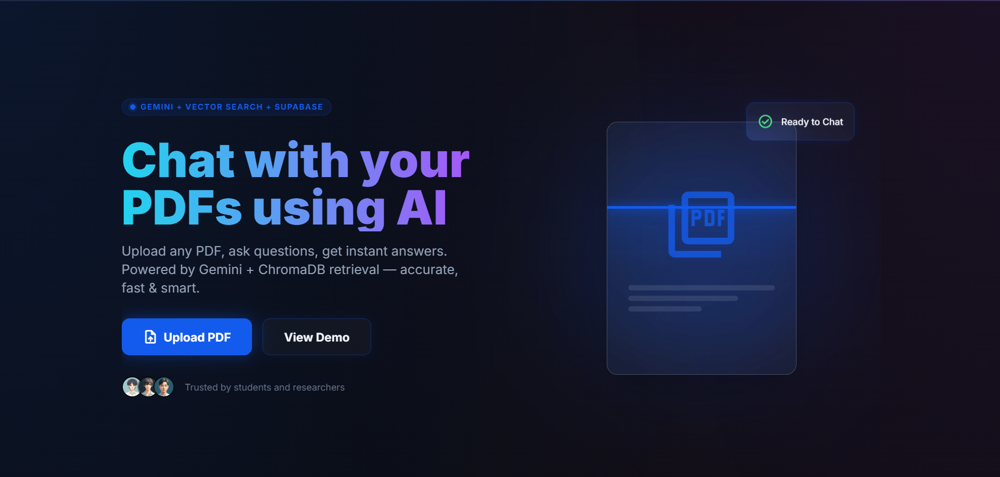

Real-world applications built with Python, Flask, APIs and AI.

PDF CHAT ASSISTENT (PCA)
It allows users to upload PDFs and interact with them using AI for instant, document-based answers.
It leverages semantic search and embeddings to keep responses accurate and context-aware.
It evaluates resumes using AI to provide ATS scoring, skill matching, and improvement suggestions.
It helps optimize content, keywords, and formatting to increase interview chances.